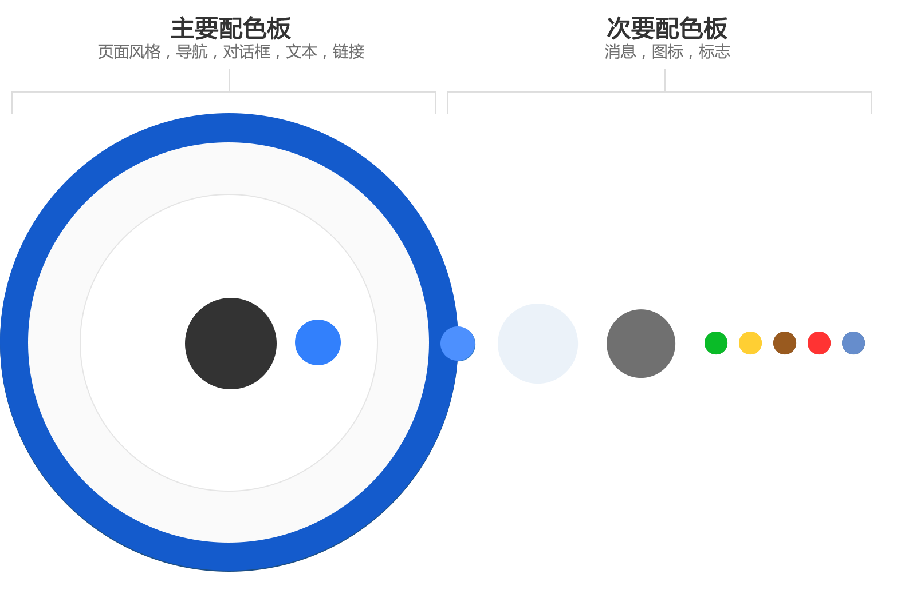

全局样式表 bootstrap
使用HTML5文档类型
我们会使用HTML5。Html5也是HTML当前最新修订版本，使用Html5的最新特性将很容易开发出符合预期的用户界面。大部分场景中HTML5本身也会兼容旧版本内容的出现，但使用时还是要考虑常用浏览器对Html5的支持程度。
Bootstrap使用的某些HTML元素和CSS属性需要文档类型为HTML5 doctype。因此这一文档类型必须出现在项目的每个页面的开始部分。
排版和链接
Html文档在浏览器渲染时会读取用户浏览器的样式设置，为了在所有浏览器获得一致的用户体验，我们会屏幕、链接和排版设置基本的全局样式。例如移除了body的 margin，仅在链接悬停时才设置链接显示下划线等。
用Normalize重置样式
因样式表具有继承特性，在给用户界面应用样式表时，为了更好利用这一特性，我们希望子级元素在一开始变具备一些基础样式。重置样式就变得非常重要。
从 Bootstrap 2 开始, 老的重置方式被 Normalize.css 取代, 这是 Nicolas Gallagher 和Jonathan Neal 共同维护的一个项目，这一项目还被 HTML5 Boilerplate 所采用。需要注意的是Bootstrap在重置样式时并没用完全使用Normalize的所有代码，并且也加入了一些Normalize中没有的内容。
栅格系统 bootstrap
栅格系统虽然来源于印刷业，但在web设计同样再合适不过。栅格系统为页面元素定位提供了基础，能容易的实现人性化的布局，保证了页面内元素排列整齐，使得用户更容易阅读。
在使用栅格系统时应该尊崇以下原则：
- 栅格的列数约定为12；
- 尽量确保页面呈现的内容在水平方向或垂直方向上对齐。
栅格系统示例
Bootstrap默认的栅格系统为12列 ，形成一个940px宽的容器，默认没有启用 响应式布局特性 。如果加入响应式布局CSS文件，栅格系统会自动根据可视窗口的宽度从724px到1170px进行动态调整。在可视窗口低于767px宽的情况下，列将不再固定并且会在垂直方向堆叠。
在Bootstrap中栅格系统也支持偏移和嵌套。
流式栅格系统 bootstrap
流式栅格系统案例
流式栅格系统对每一列的宽度使用百分比而不是像素数量。它和固定栅格系统一样拥有响应式布局的能力，这就保证它能对不同的分辨率和设备做出适当的调整。
在Bootstrap中流式栅格系统同样支持偏移和嵌套。
布局
为何需要布局？
布局决定了应用界面呈现内容的顺序和范围，帮助用户组织内容，使得用户界面更容易理解和使用。
在一个页面中通常需要用到两个方面的布局：页面布局和内容布局。
页面布局
页面布局的对象包括页面各个不同的部分，例如页面头部、主体内容及页脚等。一般页面都包含页头部和主体内容部分，以下主要从页面头部及主体内容两部分来说明。
根据这页面不同部分随宽度响应的方式使得页面布局有三种：流式布局、固定宽度布局及混合布局。
流式布局（默认布局）
流式布局的头部和主体内容部分都会随页面宽度变化而变化。流式布局能够充分利用用户屏幕空间，并且用户具有最多的控制器，能够随着用户调整窗口大小时而自动进行调整。
当用户屏幕宽度过大时，某些内容会在一行上显示过多内容而显得不是很合适，例如一行超过200个字符的文本会让阅读时很难找准下一行进而给用户使用带来不便。
固定宽度布局
固定宽带布局中限制了页面头部和主体内容部分在水平方向上的宽度，通常保持这两部分在页面中居中。固定宽度布局能够控制页面在水平方向上的尺寸，设计人员能更清楚某些元素在页面展示的效果。这可能会使得用户屏幕没有充分利用。
混合布局
混合布局中页面的不同部分能以各自的展现方式使得流式布局和固定宽度布局的方式同时出现在同一个页面上。例如页面头部使用流式布局，而页面主体内容部分使用固定宽度布局，这对于页面头部具有较多内容时比较合适。
混合布局在实际使用中很常见，可以根据需要灵活应用，以达到更好的展示效果。
内容布局
一个内容部分通常包含侧边栏、导航及文本区等，内容布局即针对一个内容部分各个组件元素采用不同的布局策略。
只有内容
只有内容的布局方式能提供最大的可用宽度。在这种布局下，没有任何侧边栏或其他分隔组件，使得水平方向得以充分利用。一些需要显示很多列的表格及其他需要占用较多水平宽度的内容非常适合只有内容布局的方式。
导航和内容
很多时候都需要一个额外的导航来帮助用户在众多内容中选择性浏览。导航可以直接放置与内容顶部或者垂直放置与内容左侧。
|
水平导航+内容
|
内容和侧边栏
很多内容包含有额外的信息，这些信息与内容关系密切，应该和内容放置在一起，这时使用侧边栏会非常合适。根据一般人浏览内容的顺序，通常侧边栏会放置于内容右侧。
导航，内容和侧边栏
根据需要，可以将导航、内容及侧边栏一起使用。
焦点内容
焦点内容通常是固定宽度并显示在页面中间。这样迫使用户仅关注此区域内容才能进行其他操作。这对于一些前提操作非常重要，例如只有用户登录之后才能使用其他功能，这时采用焦点内容布局就非常有必要。
需要注意什么？
- 在一个应用程序中使用多个布局是很常见的，不过要整体体验应该尽量保持一致。
- 使用栅格系统能很方便帮助我们实现各种布局。
- 任何时候都不应该使用表格来布局，虽然这在几年前的界面设计被广泛滥用。
文字排版
文字是组成页面的重要内容，一个好的排版是构建好的用户界面的基石。应根据我们的设计原则来进行文字排版。
排版元素
| 元素 | 标签 | 像素大小 | 说明 |
|---|---|---|---|
页面标题 |
<h1> |
38.5px | 在一个页面只有一个页面标题。 |
标题 |
<h2> |
31.5px | 作为页面第二级标题，可能在一个页面中使用到多个二级标题。 |
三级标题 |
<h3> |
24.5px 粗体 | 页面第三级标题，嵌套在二级标题下使用。 |
四级标题 |
<h4> |
17.5px 粗体 | 页面第四级标题，嵌套在三级标题下使用。 |
五级标题 |
<h5> |
14px 粗体 颜色灰色 | 页面第五级标题，嵌套在四级标题下使用。 |
六级标题 |
<h6> |
11.9px 粗体 颜色灰色 | 页面第六级标题，嵌套在五级标题下使用。 |
这是一个段落 |
<p> |
14px | 正文中大部分由段落组成。段落的行高为20px。段落间在垂直方向上有10px边距。 |
这是一个突出的段落 |
<p class="lead"> |
21px | 突出的段落具有更大的字体，在一个段落上加.lead类。 |
| 粗体文本 | <strong> |
14px | 通常粗体文本用来强调内容。 |
| 斜体文本 | <em> |
14px | |
| 小的文本 | <small> |
11.9px 颜色灰色 | small文本字体只有正常字体大小的85%，通常为11.9px。 |
| 超链接 | <a> |
14px | 超链接具有不同的颜色以区别其他文本，超链接仅当鼠标悬停时会增加下划线。 |
|
<ol><li>...</ol> |
14px | 当组织一些并列项目且关注项目之间顺序时可以使用有序列表。 |
|
<ul><li>...</ul> |
14px | 当组织一些并列项目但不关注项目之间顺序时可以使用无序列表。 |
这是一大段引用内容 |
<blockquote> |
14px | 用于显示一大段引用的内容。 |
这是内嵌的引用 |
<q> |
14px | 用于在正文行内显示引用的术语。 |
|
<pre><code>...</code> |
14px 等宽字体 | 代码区域会加上方框，并使用等宽字体显示，详细代码显示规定请参见节代码高亮。 |
如何使用？
正确做法
- 一个页面仅使用一个一级页面标题；
- 保证标题嵌套顺序正确，尽量不要跳过中间级别的标题，例如在
<h2>下直接使用<h4>而跳过了<h3>； - 尽量不要在排版中频繁定义不同的字体、颜色及大小。
错误做法
- 随意使用各级标题；
- 临时更改超链接颜色及基本行为；
- 使用
b或i元素来标识加粗文本及斜体文本，这些已经在html5中有其他含义。
关于超链接
超链接样式及鼠标悬停激活等基本行为时的样式均会在全局样式表中定义，除非是本指南中的特殊控件或组件需要，任何时候都应该尽量不更改超链接的样式。
可读性
为保证可读性，应该控制显示文字容器的宽度，尽量不要使得一行上的文本超过100个字符。
配色
配色是用户界面设计中非常重要的基本环节。运用好配色表将给用户一种赏心悦目的感觉，同时也传达了禅道的品牌精神。
在同一个产品中，应该坚持一种配色方案，如有需要适当允许用户定义自己颜色以满足用户的个性化需求。
下面将根据禅道主要产品给出一个配色方案。
主要配色板
Blue
|
Bright blue 1
|
Charcoal
|
Light gray
|
White
|
次要配色表
Bright blue 2
|
Pale blue
|
Medium gray
|
Green
|
Yellow
|
Brown
|
Warm red
|
Blue-gray
|
|
|
|
|
|
|
|||
|
|
|
|
|
||||
|
|
使用方法
主要配色板
主要配色板决定了界面主体风格。
| 名称 | 色彩 | 16进制值 | 用途 |
|---|---|---|---|
| Blue | #205081 |
|
|
| Bright blue 1 | #3b73af |
|
|
| Charcoal | #333333 |
|
|
| Light gray | #f5f5f5 |
|
|
| White | #ffffff |
|
次要调色板
次要调色板定义了页面内容中需要用到的特殊颜色，例如按钮、标签、标志、消息等。如有需要也可以使用这些颜色的亮度调整后的衍生色彩。
| 名称 | 色彩 | 16进制值 | 用途 |
|---|---|---|---|
| Bright blue 2 | #3b7fc4 |
|
|
| Pale blue | #ebf2f9 |
|
|
| Medium Gray | #707070 |
|
|
| Green | #14892c |
|
|
| Warm red | #d04437 |
|
|
| Yellow | #ffd351 |
|
|
| Blue-gray | #4a6785 |
|
|
| Brown | #815b3a |
|
衍生色彩
配色表中的所有色彩都可以根据需要在亮度或者透明度上进行上下调整，这些在用户互动时提供一些微妙的效果。例如当用户鼠标悬停在带有边框线图片上，图片边框亮度会降低10%。
注意
- 前景色与背景色的搭配应该对比鲜明，易于阅读；
- 尽量不要调整主要配色板的颜色；
- 适度的使用鲜明的颜色能给人愉快的感觉。
图标
图标能在视觉上简洁有效的指引用户操作。特殊情况下，使用图标能够代替文本。
如何使用图标？
同一个应用程序中的图标应该具有一致的外观及用户行为响应，应该将整个图标集作为用户界面中的重要部分。一般图标用于如下情况：
- 用于应用程序头部，便于用户识别正在使用的应用；
- 用于按钮，对于一些常用的按钮可以使用图标取代按钮中的文本，使得界面更加简洁；
- 用于提示消息，图标能指明消息类型，便于用户无需仔细阅读消息内容就可以迅速做出决策；
- 用于一些简单但重要列表，在列表项目前面加上合适的图标能大大增强列表识别程度；
- 等同与标签，图标能简明表达项目或信息类型。
使用图标字体
在图标字体没有普及之前，图标通常是通过图片来展示，如今图标字体是展示图标的更好方式。使用图标字体能使用CSS对图标进行调整，例如定义大小、颜色及特殊效果。本指南将使用图标字体作为系统图标集方案。采用开源web图标字体Font Awesome是一个不错的选择。在Font Awesome 3.2.1中提供了361个图标。以下列出适用于web的常用图标：
使用图标字体有一个好处就是图标就是字符，所有能用于文本的样式都可以用于图标，这样就可以随意定义图标的大小。但应该在同一个应用程序中图标应具有统一的样式，包含如下内容：
- 图标应具备统一的颜色，如果有交互行为样式也应该保持一致；
- 图标的大小应该保持一致，正文中的图标大小应为16px，标题中的图标可以为32px；
- 图标应与所指示的内容对应，不同地方的同一个指示内容应该使用同一个图标。
如有需要，也可以自定义专有的图标字体。例如需要使用一些Font Awesome中没有定义的图标，或者由于性能要求太高需要Font Awesome中没有用到的图标。
头像
头像在应用程序中的使用增强了用户识别度，使得应用程序更具亲和力。除了用来标识用户的头像，我们也把头像应用与项目和群组。
用户头像
用户头像有5种尺寸，所有头像都使用了圆角，去掉锋利的边缘。
| 示例 | 大小 | 边框半径 | 描述 |
|---|---|---|---|
| 16px | 3px | 这种小头像并不常见，但在一个下拉菜单时只能使用这种小头像，也可以作为行内元素 | |
| 24px | 3px | 可以作为行内元素来使用 | |
| 32px | 3px | 用于消息列表、评论、表格等 | |
| 48px | 3px | 用于和标题一起使用 | |
| 96px | 5px | 通常用于个人主页或个人资料卡片 |
项目头像
头像还可以项目、空间等。项目头像区别于用户头像使用圆形。在CSS3中只需要设置圆角半径为50%，不过最好已经切割好的图片代替。
| 示例 | 大小 | 描述 |
|---|---|---|
| 24px | 通常用于菜单中，也可以作为行内元素 | |
| 32px | 用在项目列表中 | |
| 48px | 用于侧边栏或页面标题中 | |
| 64px | 用于页面标题确定当前项目主体 | |
| 128px | 通常用于项目主页中或者卡片中 |
默认头像
当用户没有上传个人头像或者没有指定项目头像时，应用程序应该能够自动使用默认头像来代替。
如有可能应用应该能够从Gravatar主动获取头像。
默认图像可以使用字体图标组合实现
用户默认头像
| 大小 | 用户 | 群组 |
|---|---|---|
| 16px | ||
| 24px | ||
| 32px | ||
| 48px | ||
| 96px |
项目默认头像
| 大小 | 示例 | ||||
|---|---|---|---|---|---|
| 24px | |||||
| 32px | |||||
| 48px | |||||
| 64px | 128px |
语言表述
书写原则
清晰
力求语言表达直接、准确、通顺。多使用简单的句子来直接了当的表达用意。多使用主动语态。如有可能避免技术术语，从用户角度来尝试通俗解释。
简练
尽量使得句子中的每个字、词都是恰如其分，没有任何多余的内容，但能够表达用意。
人情味
使用用户熟悉的词汇和语调，让用户阅读时感到亲切。
有用的错误消息
如重要都应该在出错时反馈给用户，编写准确而有用的错误消息就非常重要。错误消息应该让用户明白发生了生活，如何解决或者提供其他的选择。
代码
根据需要有时需要在页面呈现程序代码，甚至html代码本身。大部分代码都对换行及缩进要求比较高，正确清晰的展示代码就显得非常重要。
行内代码
通过<code>标签内嵌一小段代码。
基本代码块
使用<pre>展示多行代码。为了能够正确展示，务必将代码中的任何尖括号做转义。
<p>Sample text here...</p>
代码高亮
代码高亮是通过根据代码语言语法给代码中的单词、字符标记为不同颜色来显示的方法。代码高亮能大大提高代码的查阅体验。在web界面加上代码高亮非常容易，在产品中如需要向用户展现代码应该使用代码高亮。
这里推荐的方案是Google Code Prettify实现代码高亮。
下面是一个php文件的示例：
<!doctype html>
<html lang="en">
<head>
<title>Zentao Design Guidelines</title>
</head>
<body>
<?php
echo "hello, world!";
?>
</body>
</html>键盘快捷键
为何需要键盘快捷键？
禅道产品的大部分用户都能熟练使用电脑，用户使用鼠标可能会完成工作，但这不是最高效的方式。提供键盘快捷键的支持可以使得用户的双手保持在键盘上完成所有操作。
如何设计键盘快捷键
- 使得键盘快捷易记，尽量使用通用的快捷键组合；
- 在不与系统快捷键和浏览器快捷键冲突的情况下，尽量使用简短的快捷键；
- 键盘快捷键应该与上下文相关并在所有相同场景保持一致，例如在产品列表中可以使用
j和k来在行中上下选择产品，那么在用户列表中也应该支持使用j和k同样的可以在行中上下选择一个用户； - 提供一个快捷键清单，并使得用户在任何时候能方便的访问到这个清单，例如当用户按下
shift+?时会打开这个清单。
应用图标
应用程序图标是用来便于用户识别网站应用的重要元素，通常用被引用在在web页面之外。常见的使用场景有Favicon、一些Web Store App及Chrome系列浏览器的创建应用程序快捷方式功能。以下主要说明Favicon的使用。
Favicon
Favicon在一个现代型网站是不可缺失的。正确的运用Favicon能优化用户使用感受。
正确的使用Favicon
- Favicon图标，必须设计简洁，易于辨识；如果图标上包含文字应该确保文字清晰可辨且不会产生误解；
- 在网页头部包含引用Favicon的说明，且确保没有语法错误；
- 不要频繁更换Favicon。
响应式设计 bootstrap
响应式设计可以使得用户界面在多种浏览设备（从桌面电脑显示器到移动电话或其他移动产品设备）上阅读和导航，同时减少缩放、平移和滚动。这就避免了为平板和手机用户单独开发独立的用户界面。
需要注意什么？
- 部分手机或平板浏览器并不支持在桌面端上的一些Javascript，应在发布之前在用户能接触到的绝大部分手机或浏览器上做好充分测试，一些在部分客户端不支持的功能应该被隐藏，或者告知用户原因；
- 使用渐进增强，从界面框架开始就应该开始考虑，例如在保证桌面客户端可用的情况下，再考虑为手机和移动平板提供支持，而不是使用“优雅降级”的方式等待所有功能完善后再考虑支持手机或平板；
- 针对不同设备的使用方式，应该隐藏在对应设备上无法进行操作或者难以操作的功能。
在Bootstrap中启用
bootstrap是支持响应式设计的，需要手动启用。